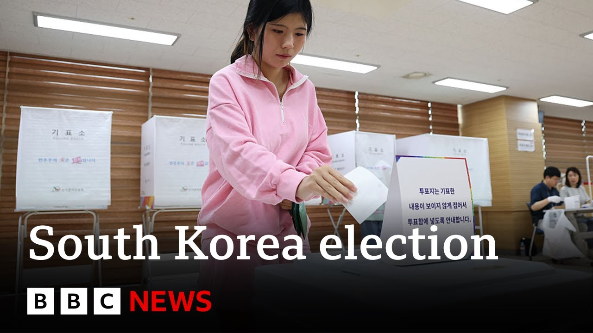

【韩国选举创投票率新高，此前戒严令尝试失败 | BBC新闻】
Summary: South Koreans are voting in a snap presidential election following the impeachment of former President Yun Sunul, with record-high turnout reflecting intense public engagement amid political turmoil sparked by a failed martial law declaration.
摘要： 韩国人在前总统尹锡悦被弹劾后举行紧急总统选举，创纪录的高投票率反映出公众在戒严令失败引发的政治动荡中的高度参与。

⏱️ Estimated Reading Time: 15 min
In South Korea, people are voting in a snap presidential election that was called after the impeachment of the former president Yun Sunul.
在韩国，人们正在参加因前总统尹锡悦被弹劾而举行的紧急总统选举。
These are the live pictures from Seoul where polls are due to close at 8:00 p.m. local time.
这是来自首尔的现场画面，投票将于当地时间晚上8点结束。
That's around 3 hours from now.
距离现在还有大约3个小时。
My colleague Steve Lie is there for us and we can join him now.
我的同事史蒂夫·李在那里，我们现在可以连线他。
Steve. Yeah. Hi Martin. It's just past 5:00 p.m. here in Soul.
史蒂夫：是的，嗨，马丁。现在首尔时间刚过下午5点。
And as you mentioned, there's just a few hours left before polls close at 8:00 p.m.
正如你提到的，距离投票结束晚上8点只剩几个小时了。
The election commission has stated that as of 4 p.m., just an hour ago, there was a record high voter turnout of 71%.
选举委员会表示，截至下午4点，也就是一小时前，投票率达到了创纪录的71%。
So, we'll have to see what that final number ends at.
所以，我们还得看看最终的数字是多少。
But it gives you a bit of an indication as to how engaged South Korea's electorate are when it comes to this election.
但这让你对韩国选民在这次选举中的参与程度有了一些了解。
And there are several reasons for that which I'll run you through because the last 6 months has been incredibly uh volatile or it's been a very chaotic period in South Korean politics.
这有几个原因，我会为你一一说明，因为过去6个月韩国政治非常动荡，或者说是一个非常混乱的时期。
So you might remember that back in December uh then president Yunang Yol declared a martial law and that really cascaded into a whole load of uh political problems for the country.
你可能还记得，去年12月，当时的总统尹锡悦宣布戒严令，这确实引发了一系列政治问题。
Mr. Yun made the declaration in a late night address that shocked the nation.
尹锡悦在深夜的讲话中宣布了这一决定，震惊了全国。
He cited threats from what he called anti-state forces and North Korea.
他提到了他所谓的“反国家势力”和朝鲜的威胁。
And in just a few hours, and amid dramatic scenes, the decree was voted down by 190 lawmakers, many of whom felt his decision was motivated by his own political troubles.
仅仅几个小时后，在戏剧性的场面中，这项法令被190名议员投票否决，其中许多人认为他的决定是出于自己的政治困境。
Now, Mr. Yun was impeached in just over a week.
尹锡悦在一周多后被弹劾。
He had been due to hold office until 2027.
他原本应该任职到2027年。
His impeachment, though, was then upheld by South Korea's constitutional court.
然而，他的弹劾随后被韩国宪法法院维持。
And in the six turbulent months that followed that martial law declaration, the country has had three acting presidents.
在戒严令宣布后的六个月动荡中，韩国已经经历了三位代理总统。
The most recent being Li Ju Ho, a former education minister who assumed the role a month ago.
最近的一位是一个月前上任的前教育部长李周浩。
So, as you can imagine, 6 months of all this political turmoil puts a lot of interest and a lot of emphasis on who is going to be the winner of this election today that will be uh facing a lot of challenges both at home and abroad regardless of who takes office.
因此，你可以想象，六个月的这种政治动荡让人们非常关注今天的选举胜者，无论谁上任，都将面临国内外诸多挑战。
Now the chaos prompted by that declaration of martial law has fested with distrust in the political establishment and polarization across the country spreading and that turmoil is also being felt in the economy which contracted in the first 3 months of the year and that was before the full impact from Donald Trump's trade tariffs was felt.
戒严令引发的混乱加剧了对政治体制的不信任，全国范围内的两极分化也在蔓延，这种动荡也影响了经济，今年前三个月经济出现萎缩，而这还是在感受到唐纳德·特朗普贸易关税的全部影响之前。
South Korea's new president will have to figure out how to negotiate with an unpredictable US president who has also hinted that he will demand a bigger financial contribution from Soul to support America's long-standing military presence in South Korea.
韩国的新总统将不得不考虑如何与一位不可预测的美国总统谈判，后者还暗示将要求首尔增加财政贡献，以支持美国在韩国的长期军事存在。
And then there's South Korea's neighbor to the North.
然后是韩国的北方邻国。
North Korea continues to expand its military and nuclear capabilities and has grown closer to Russia in recent years.
朝鲜继续扩大其军事和核能力，并且近年来与俄罗斯关系更加密切。
Now with all those factors in mind, South Koreans have a tough choice ahead of them as to who they want to lead their country.
考虑到所有这些因素，韩国人在选择谁来领导国家方面面临艰难抉择。
Now let's take a look at some of the contenders and then that are vying for the top job.
现在让我们看看一些角逐最高职位的候选人。
Le EJ Mung, he is the candidate from the Liberal opposition party.
李在明，他是自由反对党的候选人。
He's seen as the frontr runner for the job.
他被视为最有可能获胜的人选。
He's pledged to bring to justice anyone involved in the declaration of martial law.
他承诺将追究所有参与戒严令宣布的人的责任。
He also says he'll take a softer approach to North Korea, increase government spending, and hold and told supporters that he's in no rush to strike a deal with President Trump.
他还表示将对朝鲜采取更温和的态度，增加政府支出，并告诉支持者他不急于与特朗普总统达成协议。
Next is Kim Moonsu.
接下来是金文洙。
He's from the ruling People Power Party and was a Labor minister under the former President Yun, who is removed from office.
他来自执政的国民力量党，曾任被罢免的前总统尹锡悦的劳工部长。
He's promised to boost the economy, take a tough stance towards North Korea, and immediately negotiate a trade deal with the United States.
他承诺提振经济，对朝鲜采取强硬立场，并立即与美国谈判贸易协议。
And there's Ejunuk.
还有李俊锡。
He used to lead the ruling party, but now runs as a candidate for the Conservative breakaway faction called the Reform Party.
他曾领导执政党，但现在作为保守派分裂出来的改革党的候选人参选。
His stance against a greater gender equality has shown some appeal with some younger male voters.
他反对更大程度性别平等的立场对一些年轻男性选民有一定吸引力。
Now, let's dive a little bit more into some of these sort of international aspects uh that are affecting South Korea and speak with former special forces commander, retired Lieutenant General Chan Inbum.
现在，让我们更深入地探讨一些影响韩国的国际因素，并与前特种部队指挥官、退役中将陈永焕交谈。
General Chan, I want to get your thoughts first on the current state of play that South Korea finds itself in when it comes to its security relationships with the United States and also with the fact that, you know, it's still facing or in a contentious relationship with its northern neighbor.
陈将军，我想首先听听你对韩国目前在与美国的安全关系以及与北方邻国的紧张关系方面的看法。
Yes. Uh Steve, I think you gave a pretty good summary of the uh candidates and the overall situation to which we are in this uh position.
是的。史蒂夫，我认为你对候选人和我们目前所处的总体情况做了很好的总结。
uh security-wise, I think the focus now is rather not on security, but on the economic uh situation that the common people are in.
在安全方面，我认为现在的重点不是安全，而是普通民众的经济状况。
As you know, uh consumers are really struggling right now.
如你所知，消费者现在真的很困难。
Small businesses are really struggling.
小企业真的很困难。
So, that's the main focus of the Korean people.
所以，这是韩国人民的主要关注点。
Uh but on the question of security, although the Liberal Party wants a better relationship with the North Koreans, I think the real question is will North Korea answer those kinds of um new approaches?
但在安全问题上，尽管自由党希望与朝鲜改善关系，我认为真正的问题是朝鲜会回应这些新举措吗？
And same goes for the conservatives.
保守党也是如此。
The conservatives so far for the past two and a half years have been very tough on the North Koreans.
保守党在过去两年半里对朝鲜一直非常强硬。
Uh but basically North Korea has decided that they will wall themselves in and uh truly become a hermit country.
但基本上朝鲜已经决定将自己封闭起来，真正成为一个隐士国家。
So we'll have to see what happens in that area.
所以我们必须看看这方面会发生什么。
But what's very important is that our alliance with the United States and the support of the international community which of course includes the United Kingdom is a basis for stability in Northeast Asia and uh the security challenge must be addressed from those pers perspectives as well.
但非常重要的是，我们与美国的联盟以及包括英国在内的国际社会的支持是东北亚稳定的基础，安全挑战也必须从这些角度来解决。
Yeah. And elaborate if you could then the relationship that South Korea has had in the past with the United States when it comes to its security arrangements.
是的。如果可以的话，请详细说明韩国过去在与美国的安全安排方面的关系。
I was saying earlier that President Trump, we know that he's a transactional president and we've seen how he's been dealing with NATO, its allies in sort of the Western Hemisphere.
我之前说过，我们知道特朗普总统是一位交易型总统，我们也看到了他如何对待北约及其在西半球的盟友。
Are there concerns in South Korea that that the transactional nature of President Trump could be a could be a disadvantage for whoever comes into office?
韩国是否担心特朗普总统的交易性质可能对任何上任的人不利？
I think uh most Koreans think that Mr. Trump's approach is transactional.
我认为大多数韩国人认为特朗普的方式是交易性的。
But if you look very closely, what the United States is asking not only Korea but of its all of its allies is that its allies do their part.
但如果你仔细观察，美国不仅对韩国，而且对所有盟友的要求是盟友要尽自己的责任。
And quite frankly, I think you know that uh it's not an absurd demand.
坦率地说，我认为这不是一个荒谬的要求。
So South Korea has enjoyed our relationship with the United States.
因此，韩国一直享受与美国的关系。
It has brought us prosperity as well as democratic and political freedoms to where which we are now um you know enjoying all the benefits of democracy as well as the chaos.
它为我们带来了繁荣以及民主和政治自由，使我们能够享受民主的所有好处，当然也包括混乱。
So um we'll have to see what happens but although it might seem transactional I think in the end what the United States wants is a better capable ally who is willing to do their part.
所以我们必须看看会发生什么，尽管这看起来像是交易，但我认为最终美国想要的是一个更有能力且愿意尽自己责任的盟友。
And I think that's something that is quite reasonable.
我认为这是相当合理的。
And General Chan, just to get your your thoughts, I know you're a military man, but your thoughts on how South Korea's democracy has fared over the last 6 months and its democratic institutions given the amount of turmoil that former President Yangiel plunged South Korea into when he declared martial law.
陈将军，我想听听你的看法，我知道你是军人，但你对过去6个月韩国民主的表现以及民主制度的看法，考虑到前总统尹锡悦宣布戒严令给韩国带来的动荡。
Yes. So, it's very disappointing as a moderate conservative to see President Yun do what he did.
是的。作为一个温和的保守派，看到尹锡悦总统的所作所为非常令人失望。
Uh there's no excuse uh for his choice of using the military to solve a political situation that we had.
他选择用军队来解决我们面临的政治局势没有任何借口。
But then again, the political situation comes from not only Yun but various other parties which I will not name here.
但话又说回来，政治局势不仅源于尹锡悦，还源于其他各方，我在这里就不点名了。
Uh but if you look at the reactions of the Korean people, I'm quite uh proud of the fact that the parliamentarian system worked that we were able to uh prevent martial law from being effective that the soldiers uh showed common sense.
但如果你看看韩国人民的反应，我相当自豪的是议会制度发挥了作用，我们能够阻止戒严令生效，士兵们表现出了常识。
Although the general officers who were immediately under Yun wavered, the soldiers, the citizen soldiers, they did their job.
尽管直接听命于尹锡悦的将军们动摇了，但士兵们，公民士兵们，他们尽了自己的职责。
The whole political turmoil that you mentioned, which is quite uh embarrassing, but at the same time, the people, the voters cho chose their way in a democratic fashion.
你提到的整个政治动荡相当令人尴尬，但与此同时，人民，选民们以民主的方式选择了他们的道路。
So, I'm keeping my fingers crossed right now.
所以，我现在正祈祷一切顺利。
Uh within three hours the polls will be closed and within about seven hours we'll have a new president.
三小时内投票将结束，大约七小时后我们将有一位新总统。
Uh regardless of who he is, I hope he makes the same choices and not get impeached like uh the previous presidents.
无论他是谁，我希望他做出同样的选择，不要像前几任总统那样被弹劾。
General Chan, we'll leave it there for now, but thank you so much for your insight.
陈将军，我们就谈到这里，非常感谢你的见解。
Really great to get your perspective today on this election snap election day.
今天在这个紧急选举日能得到你的观点真是太好了。
We've been speaking with former special forces commander and retired Lieutenant General Chanin Bomb.
我们一直在与前特种部队指挥官、退役中将陈永焕交谈。
Yes. So, as you can see, there's quite a lot of stake here in South Korea when it comes to this snap election.
是的。所以，如你所见，这次紧急选举对韩国来说非常重要。
The polls remain open for several more hours to come.
投票还将开放几个小时。
They they will close at 8:00 p.m. and that's when the counting starts.
它们将在晚上8点关闭，届时计票工作将开始。
Uh we are expecting to have a result sometime in the early hours of this morning because because of the nature of it being a snap election uh there is going to be an inauguration of whoever is going to be the president and that's set to take place tomorrow.
我们预计在今天凌晨某个时候会有结果，因为这是一次紧急选举，无论谁将成为总统，就职典礼都将在明天举行。
So things moving very quickly here in South Korea.
所以韩国的事情进展得非常快。